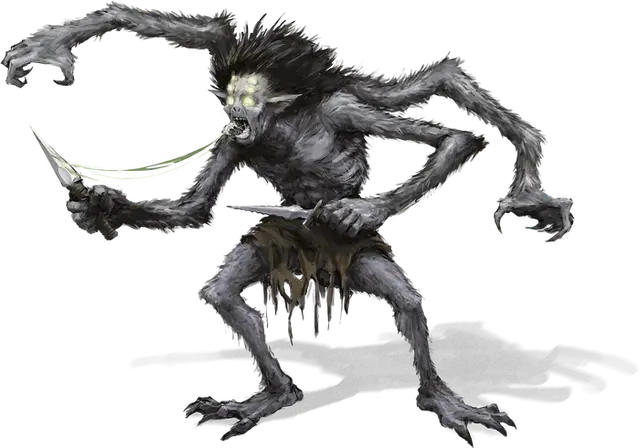

Хитин
Chitine
Маленький Монстр, хаотично-злой

Класс Доспеха 14 (шкурный доспех)
Хиты 18 (4к6 + 4)
Скорость 30 футов, лазая 30 футов
| мод | спас | ||
|---|---|---|---|
| СИЛ | 10 | +0 | +0 |
| ЛОВ | 14 | +2 | +2 |
| ТЕЛ | 12 | +1 | +1 |
| мод | спас | ||
|---|---|---|---|
| ИНТ | 10 | +0 | +0 |
| МДР | 10 | +0 | +0 |
| ХАР | 7 | −2 | −2 |
Навыки Атлетика +4, Скрытность +4
Чувства тёмное зрение 60 футов, пассивное Восприятие 10
Языки Подземный
Опасность 1/2 (100 опыта)
Бонус мастерства +2
Среда обитания Подземье
Особенности
Наследие фей. . Хитин получает преимущество на спасброски против очарования и не может быть магически усыплён.
Чувствительность к солнечному свету. . Находясь на солнечном свете хитин получает помеху на броски на попадание, а так же на проверки Мудрости (Восприятие), основанные на зрении.
Чувство паутины. . Будучи в контакте с паутиной, хитин знает точное местоположение любого другого существа, находящегося в контакте с этой паутиной.
Паутинопроходец. Хитин игнорирует любые ограничения в движении, вызванные паутиной.
Действия
Мультиатака. Хитин совершает три атаки своими кинжалами.
Кинжал. . Рукопашная или Дальнобойная атака оружием: +4 к попаданию, досягаемость 5 футов или дистанция 20/60 футов, одна цель. Попадание: 4 (1к4 + 2) колющего урона.
Описание
См. дополнительно статью: "Бестиарий: Хитины"